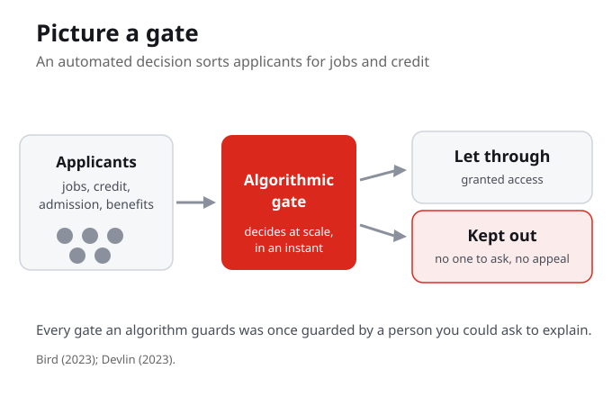
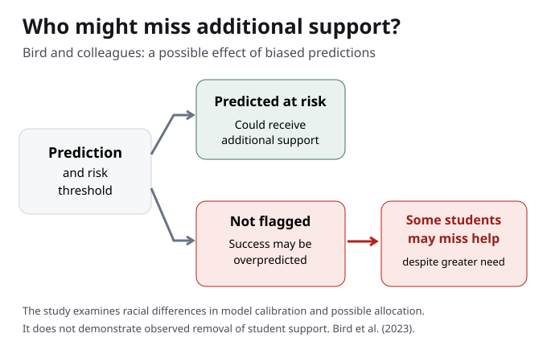

Picture a gate
Picture a gate. Many applicants on one side, an automated decision in the middle, two streams on the other: let through, and kept out. The gate decides at scale and in an instant. And every gate an algorithm now guards was once guarded by a person you could at least ask to explain.
An algorithmic gate decides at scale and in an instant. The same decision that once passed through a person you could ask now passes through a system that answers no one.
When an algorithm decides who is let through a gate, who can the person who is kept out actually ask?
What algorithmic gatekeeping means
Algorithmic gatekeeping is the use of automated systems to decide who is granted access: who is hired, who is approved for credit, who is admitted or flagged in education. The gate operates at scale and at speed. And the person kept out often has no one to ask and no decision to appeal.
A gate that runs in software does not slow down for a hard case. It sorts thousands of people on the same rule, and the person it keeps out is often left with no one to ask and nothing to appeal.
The gate sits at three real doors
This is not abstract. The same logic runs through three doors that govern real opportunity: hiring, where a tool screens resumes before a person sees them; lending, where a credit score decides who is trusted with money; and education, where a model flags who is likely to succeed or fail. Gatekeeping is where the dimensions you have learned this term meet a person's life chances.
Hiring, lending, and education are where these systems touch a person's life chances directly. A gate is not a metaphor here, it is the job you do not get, the loan you are refused, the support you are never offered.
Which gate in your own life, a job portal, a loan, an admission, a benefit, was decided in part by a system?

A tool sold as help can still harm
Bird, Castleman, and Song, in 2023, studied predictive models that colleges use to flag students likely to succeed or fail. They found that algorithmic bias can reinforce racial inequities. So a tool sold as help can label some students, early and wrongly, as poor bets, shaping who gets support and who is quietly written off.
The model is meant to point support toward students who need it. Bird, Castleman, and Song found that bias in the model can do the opposite: mark some students as poor bets before the term even runs.
What it means to be flagged early
Hold on to what a wrong flag costs. A student marked early as likely to fail may be steered away from a program, watched more closely, or simply not offered the help that goes to the students the model trusts. The label arrives before the student has done anything, and it can become true precisely because the system acted on it. The harm is not abstract; it shapes who gets support and who is written off.
A prediction is not a neutral guess when a system acts on it. Steer support away from a student you flagged, and you help make the flag come true.
What is the harm in being flagged, early and wrongly, as likely to fail?

Where the inequality lives
Kate Devlin, in 2023, names where the inequality lives. Within the algorithm, in its data and design. And without it, in who builds these systems and who is subject to them. Both matter, because fixing the data does not fix who holds the power, and changing who builds it does not fix biased data on its own.
Devlin names two homes for inequality: within the algorithm, in its data and design, and without it, in who builds these systems and who is subject to them. Both matter, because changing one does not fix the other.
Devlin distinguishes inequality within and without the algorithm. What does each mean, and why do both matter?
A ranking is a gate too
Safiya Umoja Noble shows that search and ranking systems can reproduce racism and sexism, often against Black women, while presenting as neutral utilities. A ranking is a gate too: what is pushed to the top is let through, what is buried is kept out. We treat Noble's argument carefully and point you to her book, Algorithms of oppression, for the primary text.
The gate does not always look like a yes or no. A search result that ranks one group up and buries another is sorting people too, while looking like a neutral tool.
The promise of neutral, tested
These systems are sold on a promise: that automating a decision makes it fairer and more objective than a person would be. This week tests that promise against the gates the systems now guard. When the same bias shows up in education, in hiring, and in search, the neutrality is the selling point, not the reality. That is the New Jim Code at work: old inequity carried forward by a tool that looks fair.
The claim is that a machine removes human bias. The evidence is that it can launder bias instead, making an unequal outcome look like an objective one.
Who answers for the gate
So when you meet a gate, ask who it lets through, who it keeps out, whether the harm falls along race, gender, or class, and who can be asked to answer for it. Accountability is the hard part. A person at a gate can be asked to explain a decision. A model at scale answers no one, unless the institutions that build, buy, and deploy it are held responsible.
Meeting a gate is a set of questions: who it lets through, who it keeps out, whether the harm falls along race, gender, or class, and who can be asked to answer for it.
When the gatekeeper is a model, who do you ask, and who is accountable when the gate keeps people out quietly, at scale?
Your turn: adjust the gate yourself
You do not have to take this on faith. This week you will step up to an automated screening system and adjust it yourself. Move a threshold, switch a criterion on or off, and watch who is filtered out. Then add one real gate from your own life to your Personal Cartography, naming who it let through, who it kept out, and who you could ask to explain.
You see the gate most clearly when your own hand is on the dial. Change one setting, watch who falls out, and the design choice stops being invisible.
What You Are Learning This Week
Gates Decide at Scale and in an Instant
Algorithmic gatekeeping is the use of automated systems to decide who is granted access: who is hired, who is approved for credit, who is admitted. The gate operates at scale and at speed, and the person kept out often has no one to ask and no decision to appeal.
A Tool Sold as Help Can Still Harm
Bird, Castleman, and Song (2023) found that algorithmic bias in predictive models can reinforce racial inequities. A model meant to flag students who need support can instead label some, early and wrongly, as likely to fail, shaping who gets help and who is written off.
Inequality Lives Within and Without the Algorithm
Devlin (2023) shows the inequality is not only in the data and design inside the system. It is also in who builds these systems and who is subject to them. A ranking, as Noble argues, is a gate that can reproduce racism and sexism while presenting as neutral.
Ask Who Answers for the Gate
Every gate an algorithm now guards was once guarded by a person you could ask to explain. When you meet a gate, ask who it lets through, who it keeps out, whether the harm falls along race, gender, or class, and who can be asked to answer for it.